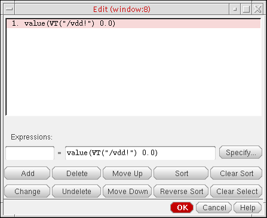

19
Viewing, Printing, and Plotting Results
ADE Assembler displays simulations results in a tabular format on the Results tab of the Outputs pane. In the results table, output values for tests and corners are displayed in rows and corners, respectively. A standard set of columns display the maximum and minimum value for each test and output combination, their specifications, and their pass or fail status. If, due to some reason, any output value is not calculated, an appropriate indication of an error is displayed. The Results tab also contains a toolbar that provides various commands to customize the view of results.
The following sections of this chapter provide more details about how to view, print, or plot the results displayed on the Results table:
- Viewing Data on the Results Tab
- Filtering Results on the Results Tab
- Plotting Results
- Printing Results
- Backannotating Data from Results to Schematic
- Viewing Waveform Info-Balloons on Schematic
- Re-Evaluation of Expressions and Specifications
- Viewing the Spec Summary
- Comparing Results Using the Spec Comparison Form
- Managing Results
- Using SKILL to Display Tabular Data
- Showing Variable and Parameter Values for Design Points on the Results Tab
- Searching for Conditional Results
Viewing Data on the Results Tab
You can view simulation results on the Results tab of the Outputs pane in the ADE Assembler environment.
Results appear on a new tab in the Results tab of the Outputs pane after you run a successful simulation, or
By default, all columns and types of information appear on the Results tab. You can show and hide various columns and types of information using the
button. Corners conditions appear in a table along the top portion of the tab. You can
Working with Tabs for Simulation Checkpoints
When you run a simulation, or
For example, in the following figure, the Interactive.0 tab displays the results for the Interactive.0 checkpoint. To view the results for the Interactive.1 checkpoint, click the Interactive.1 tab.
The icons that are displayed in the tab name when you run a simulation are described below:
| Icon | Description |
|---|---|
|
|
|
|
|
Simulation run for |
|
|
To close the currently active tab, do the following:
 icon on the bottom right of the Results tab.
icon on the bottom right of the Results tab.To close a specific tab, do the following:
To close all tabs other than the current one, do the following:
To close all tabs, do the following:
Results Views
By default, the columns listed in Table 19-1 are displayed in the Results tab of the Outputs pane. This view is called the Detail view. You can use the Select the results view drop-down list to switch between the following views:
- Detail
- Detail - Transpose
- Detail - Transpose with Test
- Optimization
- Status
- Summary
- Yield
- Checks/Asserts
- Fault
-
Capacitance
Every run mode has a default result view mapped to it. For example, the default result view for the Monte Carlo Sampling run mode is the Yield view.
Detail
Displays the detailed results of all the design points and corners.
Figure 19-1 Detail View on the Results Tab
For more information about the columns in the Detail view, see Table 19-1.
When multiple instance parameters with the same instance name occur at different levels of hierarchy, the instance parameter path is displayed in a gray header row for each result point. This row contains a prefix, Parameters. This helps in uniquely identifying the parameters when multiple instances have parameters with the same names.
Related Topics
Viewing Simulation Results When Design Variables Use Swept Values
When a global variable is disabled for a test that uses sweep values, the value in the corresponding global variable is ignored. ADE Assembler creates separate sweep points for that test on the Results tab.
Consider the following example where the ADE Assembler setup contains three tests: AC, TRAN and PSR. The vdd global variable has its value set to 2V, and it is disabled for the test AC, which sweeps the value of vdd to 2.0V, 2.2V and 2.4V. The Data View assistant given below shows how the variables are set.
In this case, the results are displayed as shown in the figure below.
Note the following points for the above example:
-
The Test Sweep Points count on the Run Summary pane shows the number of sweep points specified for the design variables for tests in the setup. Test
ACuses three sweep points forvdd. TestsTRANandPSRuse the single value from the global variablevdd. Therefore, the total test sweep count is4. Each sweep point has a separate point ID on the Results tab. - All the results are displayed together on the Results tab.
Detail - Transpose
The Detail - Transpose view allows visualization of results across corners. The table on the left side displays corner and sweep conditions for each simulation point, and the table on the right side displays the results and pass, near or fail status for output expressions at each simulation point.
Figure 19-2 Detail - Transpose View in Results Tab
For more information about the Detail - Transpose view, see Customizing the Detail - Transpose View.
Detail - Transpose with Test
The Detail - Transpose with Test view is similar to the Detail - Transpose view. The table on the left side displays test name, corners, parameters, and sweep conditions for each simulation point. The table on the right side displays the results and pass, near or fail status for output expressions at each simulation point.
Figure 19-3 Detail - Transpose with Test View in Results Tab
If the results contain details of instance parameters, the Detail - Transpose or Detail - Transpose with Test result views show the instance path in the tooltips of parameter names. This helps in uniquely identifying the parameters when multiple instances have parameters with same names.
This view is particular useful when you need to export the results to Excel and create pivot reports based on test names. For more details, refer to Exporting Results.
Optimization
The Optimization view is displayed when you run Worst Case Corners, Global Optimization, or Local Optimization run modes. It displays the Test, Output, Value, Spec, Weight, Min, Max and corners-related columns.
Status
The Status view displays the progress and status of the simulation run, and the contents of the run log file. For more information about the Status view, see Using the Status View.
Figure 19-4 Status View in Results Tab
Summary
The Summary view displays the summary of the results for output expressions across all corners and sweeps.
Figure 19-5 Summary View in Results Tab
The columns in the Summary view are described below:
Yield
The Monte Carlo Yield view displays for all specifications the overall yield estimate based on pass or fail status. The yield estimate for each specification and statistics, such as mean and standard deviation, are also reported. A sample Yield view is displayed in the following figure.
Figure 19-6 Yield View on Results Tab
The columns displayed in the Yield view are described in the table given below:
 is the estimated mean of the process and
is the estimated variability of the process, Cpk is calculated by using the following equation.
is the estimated mean of the process and
is the estimated variability of the process, Cpk is calculated by using the following equation.
The summary row for each specification displays the analysis for that specification across all corners. Summary values are derived as follows:
| Column | Summary value |
|---|---|
|
The pass/fail status of the specification across all sweeps and corners |
|
|
Number of points that resulted in simulation or evaluation errors for the output |
The gray-colored row at the top displays the Yield Estimate – an estimate of the circuit yield taking into account all of the specifications.
You can specify a confidence level to view the yield estimate confidence intervals. For more details, refer to Viewing Data for a Specific Confidence Interval Viewing Data for a Specific Confidence Interval.
You can also set the error filter to filter out the results with simulation error or evaluation errors. For more details, refer to Filtering Out Data from the Yield View.
Capacitance
The Capacitance results view displays the capacitance values saved by Spectre by running the netcap analysis.
When is the Capacitance results view available in ADE Assembler?
The Capacitance results view is displayed when:
-
You enable the allcap , netcap, or moscap parameters in the Save circuit information analysis table of the Save Options form for Spectre.
The allcap parameter saves the parasitics for both network and devices. netcap saves the parasitics for only network. You can change the names of these parameters in the Name column of the Save circuit information analysis section.
By default, both parameters are disabled. You can change their default status to enabled by modifying the value of thespectre.outputs infoOptionsenvironment variable as shown below.
When these parameters are enabled, Spectre runs the netcap analysis as part of its simulation and prints the capacitance contribution, design capacitance, and MOSFET-terminal capacitances.allcap;allcap;file;;;;truenetcap;netcap;rawfile;;;;true - When you are running simulations with the Single Run, Sweeps, and Corners run mode.
-
When you are running post-layout simulations with a DSPF file or a Cadence Quantus® Smart View™. The netcap analysis is not supported for extracted views, DSPF views, or SPICE files included using Virtuoso Hierarchy Editor.If you are not saving the capacitance values, set the showCapacitanceView environment variable to
nilto hide Capacitance from the drop-down list.
Difference Between moscap and oppoint parameters used for info analysis
The difference between moscap and oppoint setting is in the junction capacitances for drain-bulk and source-bulk. moscap is used to calculate the capacitance of a single mosfet. A diagonal capacitor equals to the sum of all moscap capacitances connected to the terminal, so it includes junction capacitances. The following table shows how moscap is calculated in terms of oppoint:
| moscap | Expression by oppoint |
Details of the Capacitance View
The following figure shows an example of the Capacitance results view showing network capacitance data.
By default, the results table in the Capacitance view shows the net capacitance data for the first test in the setup. You can choose another test from the Test drop-down list on top.
The table shows two types of data that you can choose from the drop-down list to the right of the Test drop-down list:
Info Network Capacitance
The table for network capacitance contains the following columns:
| Column | Description |
|
Name of the information as specified in the Save circuit information analysis section of the Save Options form. |
|
|
Type of net. It contains one of the following values:
|
|
|
Capacitance contribution from the capacitors in an extracted view (DSPF, SPEF). |
|
|
Capacitance contribution from the capacitors in the schematic view. |
|
|
Capacitance contribution from capacitors in files with special formats. For example, an SPEF file. |
|
|
The sum of values in columns Cextracted, Cdesign, and Cestimated. |
|
|
The sum of values in columns Cinterconnect, Cdrain, Cgate, Csource, and Cbulk. |
You can use the filters in each column header to view data for a particular corner, instance, location, or capacitance value.
The net capacitance data is saved in the netlist.info.netcap file in ASCII format.
Info Device Capacitance
You can view the capacitance values for devices or MOSFETs by choosing Info device capacitance from the drop-down list to the right of Test.
The following figure shows an example of the Capacitance results view showing device capacitance data.
The table for MOSFET or device capacitance shows the
You can use the filters in each column header to view data for a particular corner, instance, location, or capacitance value.
Saving Capacitance Data at Multiple Time Points
You can save the capacitance information at different time points by modifying the settings in the INFOTIMES SETTINGS on the Output tab of the Transient Options form:
- The infotimes field specifies the time points.
- The infoname field specifies the name of the information type for which data is to be saved at the given time points. This value in this field must match the value in the Name column of the Save circuit information analysis section of the Save Options form.
The following example shows the settings to compute net capacitance information at two time points 10 nanoseconds and 20 nanoseconds.
When you save information at multiple time points, the information name in the Info Name column of the Info Network Capacitance table includes the time point as well.
Customizing the Detail - Transpose View
Most of the customization that you can perform in the Detail - Transpose view are the same as in other
- Hiding and Showing Columns in the Detail - Transpose View
- Changing the Order of Columns in the Detail - Transpose View
- Viewing the Test Name for Outputs in the Detail - Transpose View
Hiding and Showing Columns in the Detail - Transpose View
To hide a column, do the following:
To hide multiple columns in the Detail-Transpose view:
- Select one or more columns.
- Right-click any one of the selected column.
- Choose Hide Selected Columns.
To display all the columns, do the following:
Changing the Order of Columns in the Detail - Transpose View
To change the order of columns, do the following:
Viewing the Test Name for Outputs in the Detail - Transpose View
To view the name of the test for which an output is defined, do the following:
-
Place the mouse pointer on the name of the column for the output on the right hand side of the Detail - Transpose view.
The name of the test for which the output is defined is displayed in a pop-up.
Using the Status View
See the following topics for more information about using the Status view on the Results tab of the Outputs pane:
Stopping the Simulation Run from the Status View
To stop the simulation run, do the following:
Hiding and Showing Information in the Status View
Click the button on the Results tab. A check mark next to an item indicates that information for that item is being displayed.
To hide information, do the following:
To unhide the information click the button once again and choose the item.
Switching Between Results Views
To switch between views, do the following:
Specifying the Default Formatting Options
To specify the default number of significant digits and notation style for the measured results displayed in the Results tab of the Outputs pane, do the following:
-
Choose Options – Outputs Formatting.
The Default Formatting Options form appears.
-
Specify the number of significant digits in the Significant Digits field.
The default value is4. Valid values are2to15. -
Select the notation style in the Notation Style drop-down list.
You can use the Units, Digits, Notation and Suffix columns in the Outputs Setup tab of the Outputs pane to override the default number of significant digits and notation style for displaying the results for individual output expressions. For more information, see Adding or Modifying an Output Expression.
Configuring the Results Tab
You can view or hide columns and rows displayed on the Results tab by using the Configure what is shown in the table list on the toolbar. When you click this button, ADE Assembler shows the following menu.
t. The specified simulator must be Spectre or AMS.For information about these options, see the following topics:
- Hiding Test Details
- Hiding Specification Details
- Hiding Corner Results
- Hiding Signals
- Hiding Measured Result Values
- Hiding Minimum and Maximum Values
- Viewing Only Errors
- Viewing the Starting Point
- Customizing the Display of Variables and Parameters for Design Points
- Viewing the Run Statistics
- Focusing on the Results Values that Fail to Meet Specifications (Detail-Transpose view only)
- Focusing on the Results with Large Variations from Specifications (Detail-Transpose view only)
Configuring Text Color for Pass/Fail, Min, and Max Columns
The default text color in the Min and Max columns is black, but you can specify different colors to be used to indicate the pass, fail, or near status of values in these columns. The same set of colors are applied to the Pass/Fail column too. To change the text colors, you can use the following environment variables in CIW or .cdsenv file:
In the example given below, the text color for result values nearing spec has been changed to orange.
Hiding and Showing Data on the Results Tab
The following data appears on the Results tab of the Outputs pane for the
Table 19-1 Columns in the Detail View
| Column | Data/Content | Hide/Unhide |
|---|---|---|
|
Plot |
See Hiding Signals |
|
|
pass when values are within specifications; near when one or more measured values are no more than 10% outside the target value of the specification; fail when one or more measured values are more than 10% outside the target value of the specification. For more information about the pass, near or fail status, see Viewing Specification Results in the Results Tab. |
||
Hiding Test Details
Test details appear in the Test column on the Results tab of the Outputs pane. To hide test details, do the following:
-
Click the
(Configure what is shown in the table) button on the Results tab and select Test.
The Test column disappears from the Results tab.
To unhide this column, click the button once again and select Test.
Hiding Specification Details
Specification details appear in the Spec and Weight columns on the Results tab of the Outputs pane. To hide specification details, do the following:
-
Click the
button on the Results tab and select Spec/Weight.
The Spec and Weight columns disappear from the Results tab.
To unhide these columns, click the button once again and select Spec/Weight.
Hiding Corner Results
Corner results appear in columns on the Results tab of the Outputs pane, each result in its own column. To hide corner results columns, do the following:
-
Click the
button on the Results tab and select Corners.
The corner results columns disappear from the Results tab.
To unhide these columns, click the button once again and select Corners.
Hiding Disabled Corners
To hide the disabled corners in the Results tab, deselect the Disabled Corners command from the Configure what is shown in the table drop-down list on the toolbar of the Results tab.
While working with this command, the following cases are possible.
-
On selecting the Disabled Corners command, the disabled corners are indicated in the Results tab with the text
disabledwritten in the corner column.
-
On disabling a few corners for each test, corner columns with partially filled values are displayed in the Results tab.
- On hiding the test containing the disabled corners, the related corner columns are removed from the Results tab.
Hiding Signals
Signals appear as rows with the  icon in the Nominal column and the columns for corners on the Results tab of the Outputs pane.
icon in the Nominal column and the columns for corners on the Results tab of the Outputs pane.
To hide signals, do the following:
-
Click the
button on the Results tab and select Signals.
The signal rows disappear from the Results tab. If you have any measured values for expressions, those are the only values that appear.
To unhide these rows, click the button once again and select Signals.
Hiding Measured Result Values
Measured result values appear in the Nominal column and the columns for corners on the Results tab of the Outputs pane.
To show or hide these measured result values, you can use the following commands from the (Configure what is shown in the table) drop-down list on the toolbar of the Results tab:
- Scalar Expressions: Shows or hides results of the expressions that evaluate to scalar results.
- Waveform Expressions: Shows or hides results of the expressions that evaluate to waveform results.
Hiding Minimum and Maximum Values
The minimum and maximum values appear in the Min and Max columns on the Results tab of the Outputs pane. To hide minimum and maximum values, do the following:
-
Click
on the Results tab and select Min/Max.
The Min and Max columns disappear from the Results tab.
To unhide these columns, click the button once again and select Min/Max.
Viewing Only Errors
To show errors only, do the following:
To hide these rows, click the button once again and select Only Errors.
Viewing the Starting Point
The starting point specified for Monte Carlo Sampling, Global Optimization, Local Optimization, Improve, Sensitivity Analysis, and Size Over Corners runs is displayed as the starting point on the Results tab of the Outputs pane. To show the starting point on the top of the Results tab, do the following:
-
Click
on the Results tab and select Starting Point.
The rows displaying the starting point appears on the top of the Results tab.
To hide these rows, click once again and select Starting Point.
Customizing the Display of Variables and Parameters for Design Points
ADE Assembler shows the design variables and device parameters on the gray header of each design point displayed in the Results tab. When a lot of variables or parameters are used, it may not be possible to accommodate all of those on the gray header or the header may look overfilled. Therefore, by default, ADE Assembler shows only those variables and parameters that are swept or varied across design points.
For example, in the following figure, for each design point, the gray bars show the values of the swept parameter, vdd. Other variables or parameters that had fixed values across all design points are hidden.
Depending on your requirement to view the values of fixed variables, you can customize the view to show or hide selected design variables or device parameters on the gray headers in the following two ways:
- Display All Fixed and Swept Variables and Parameters
- Show or Hide Design Variables Fixed for Some Tests
Display All Fixed and Swept Variables and Parameters
To view the values of all design variables and device parameters, fixed or swept, used for a design point, click Configure what is shown in the table on the toolbar of the Results tab and select Fixed Parameters/Variables.
All design variables and parameters, swept or fixed, for a design point are displayed on the header.
Show or Hide Design Variables Fixed for Some Tests
By default, any design variable that is swept in the setup is shown in the gray headers for all design points even is it is fixed for a particular design point.
Consider an example with the following setup:
By default, all design points show the values of vdd and cload in the gray header.
However, if you want to identify only those design points that are using swept values for vdd and cload, you can hide the design variables that are fixed for the design point that belong to test tran in this example.
To hide the design points with fixed values for variables:
-
Set the
displayFixedTestVariablesenvironment variable tonil.
This variable is set totby default. -
Deselect the Fixed Variables/Parameters command in the Configure what is shown in the table drop-down list on the toolbar.
Next time, when the results table is refreshed, the gray header hides the variables that not swept for a design point, as shown below.
Related Topics
Showing Variable Parameters for Design Points in the Variable Display Assistant
Viewing the Run Statistics
t. ADE Assembler adds outputs displaying run statistics information in the Results tab.
These outputs show the following information:
-
sim_Peak_Memory: Peak memory consumption for Spectre -
sim_Threads_Used: Number of threads used by Spectre -
sim_Threads_Recommended: Number of threads recommended Spectre X or APS for a simulation -
sim_JobId: LSF job identifier, shown only when you are using the LBS distribution method -
sim_Host_Name: Name of the host on which simulation was run -
sim_Circuit_Nodes: The node number in the Spectre inventory -
sim_Started_Time: Start time of the simulation run -
sim_Finished_Time: End time of the simulation run -
sim_Elapsed_Time: Elapsed time of the Spectre simulation run -
sim_DSPF_Substitution: The subckt information related to DSPF substitution that is extracted from the Spectre output file. -
sim_Intrinsic_Tran_Analysis_Time: Transient intrinsic elapsed time for the Spectre simulation run -
sim_CPU_Time: CPU time reported by Spectre -
sim_CPU_Utilization: CPU utilization reported by Spectre
More values can be displayed for debugging. You can customize the list of outputs by using the environment variable
Focusing on the Results Values that Fail to Meet Specifications (Detail-Transpose view only)
In the Detail-Transpose view, by default, the result columns are arranged in the same order in which they are defined on the Output Setup tab. If the number of results is high, you need to scroll to the right to view all the columns. You can either hide columns by using the Hide Column command in the context-sensitive menu of the columns.
To focus on the result values that failed to meet the specification, you can choose the Failure Count command from the (Configure what is shown in the table) drop-down list on the toolbar of the Results tab.
The Failure Count command rearranges the output columns in the Detail-Transpose view to display the columns with failing results in the left.
Focusing on the Results with Large Variations from Specifications (Detail-Transpose view only)
In the Detail-Transpose view, by default, the result columns are arranged in the same order in which they are defined on the Output Setup tab. If the number of results is high, you need to scroll to the right to view all the columns.
To focus on the result values with a large variation from the specification, you can choose the Range Spread command from the (Configure what is shown in the table) drop-down list on the toolbar of the Results tab.
The Range Spread command rearranges the output columns in the Detail-Transpose view to display the columns in the decreasing order of variation from the specifications. The columns with results that have the largest variation from the given specification are displayed on the left.
Hiding and Showing Results for Tests
By default, the Results tab displays the results for all the tests. However, if you need to focus on the results of a particular test, you can choose to hide the rows related to that test.
To view only the results for a specific test, do the following:
-
Click the
 button on the Results tab and select Hide All Tests.
button on the Results tab and select Hide All Tests. -
Click the
button on the Results tab and select a specific test.
To view the results for all the tests, do the following:
To hide the results for all tests, do the following:
The tool filters out the results for the selected tests. These filters are applied to both Detail and Detail - Transpose result views.
In case the tests use overridden values for variables, the parameter header rows are updated to show the variable values related to only those tests that are visible. For more details, refer to Updating Global Variable Values with Design Variable Values.
Similarly, if a corner is disabled for a test, only the corner columns that are enabled for the visible tests are shown. Other corners are hidden.
Freezing Columns in the Detail and Optimization View
You can view two areas of the Results tab and lock the columns in one area by freezing columns. When you freeze columns, you select specific columns that remain visible when scrolling in the Results tab.
To freeze columns, do the following:
- Right-click the column to the right of where you want the split to appear and choose Freeze columns.
For example, to freeze the Output column and all the columns to the left of the Output column, right-click the heading for the Output column and choose Freeze columns. This allows you to view the contents of the Output column and all the columns to the left of the Output column when you use the horizontal scroll bar in the Results tab scroll through the results for corners.
Sorting Results in the Detail and Detail-Transpose Views
You can sort data in the Detail or Detail-Transpose result views to view the related data rows together in a the ascending or descending order. For example, you can sort rows by the output name, test name, or in the order of result values in any column.
To sort results based on a specific column in the Detail or Detail-Transpose result views:
-
Click the header of the column that you want to use as base for sorting.
All the rows in the results table are sorted according the values in that column. The up or down arrow on the top-right area of the column header shows if the rows are being arranged in the ascending or the descending order.
-
Click Undo sorting on the toolbar of the Results tab.
The results are rearranged in the default order as they were visible before sorting.
Filtering Results on the Results Tab
The Results tab of ADE Assembler displays the results of measurements for all the tests and their outputs enabled in the active setup. When the number of outputs are large, you can apply filters to selectively display the results you are interested in viewing.
You can apply filters to view only those rows in the Results table that contain values specified by a filter criteria. You can either enter the filter criteria in the Filter text field on top of a column, or select values form the drop-down list to the right of that field. For example, in the Detail results view, you want to view all the rows that show the results for output Gain. For this, select Gain from the drop-down list. All the rows that show the results for other outputs are hidden.
The following figure shows a filter applied in the Detail - Transpose results view.
Important Points to Note
- Filters are supported only in the Detail, Detail–Transpose, Checks/Asserts, Yield, and Optimization results views.
-
Filters set on multiple columns apply the
ANDoperation.
For example, to view all the results for which the value of current is greater than5m, you can selectCurrentin the Output column, and specify>5min the Nominal column on the Results tab. -
You can apply a compound criteria in a filter by using the operators given in the table below.
Operator Use Example - If you are not using comparison operators, the numerical values are compared like strings.
-
You can make a filter more precise by using the commands in the right-click menu of a filter text field.
For example, to view the results for two outputs,GainandBW, you can specifyGain BWin the filter field for the Output column. In addition, select Any of The Words from the right-click menu of the filter text field. Results for only these two outputs will be displayed.
Saving Commonly Used Filters
ADE Assembler allows you to save commonly-used filters by name so that they can be again applied to the same or other similar results.
Another benefit is that, if you have saved the filters applied to the results columns, the filter settings are retained when you switch the result views.
To save a filter on the Results tab, do this:
- Apply the required filter settings. You can apply settings in multiple columns.
- Specify a name in the Filter name drop-down list on the Results toolbar.
-
Right-click the Filter name drop-down list and choose Save.
The filter criteria is saved with the given name in the drop-down list and can be used to filter the results using the same criteria.Filters are saved in the maestro view. Therefore, a filter saved in one view cannot be used in other views.If a saved filter is not required, you can delete it. For this, select the name of the filter to be deleted from the Filter name drop-down list. Right-click the drop-down list and choose Delete.
Important Points to Note
- Filters applied on a column are saved in the filter history for that column. You can clear this history by selecting the Clear Search History command in the right-click menu of the Filter drop-down list for that column.
- You can hide the filters by using the Hide Filters command in the right-click menu of a column header on the Results tab. The hidden filters can be viewed again by selecting the Show Filters command in the right-click menu of a column header.
- Filters are not available in the Spec Summary of results.
- Filters are useful only for viewing selected results on the Results tab. They are not used while plotting results on graphs. The Plot All command plots graphs for all the results.
- By default, the filters are always shown on the Results tab. When the number of rows in the results is small, you can choose to hide the filters by setting the resultsFilteringColumnsList environment variable.
Plotting Results
You can plot the results that appear on the Results tab of the Outputs pane. The plots are displayed in a waveform window.
Interactive.<n>/psf/<test_name>/psf, which is the top level psf directory
- Interactive.<n>/1/<test_name>/psf, which is the psf directory for the single point
ii) When you set context from Result Browser to the top level psf directory and evaluate a scalar expression in Calculator, the result is returned as a waveform object. However, when you set context to the results directory of the single point run, the result of a scalar expression is returned as a scalar value.
iii) When you plot results of a single point run, if no global variables or parameters were used, the trace legend of the graph shows the Design Point column. If global variables or parameters were used to run the simulation for that point, name of last variable or parameter in the global list is shown in the trace legend.For more information, see the following topics:
- Plotting Across All Corners and Sweeps
- Plotting Across Corners
- Plotting Across Design Points
- Plotting Outputs for Selected Points
- Plotting Outputs from the Specified Plot Set
- Other Plotting Methods
- Plotting Templates
- Plotting Associated Signals
You need not wait for the simulation run to complete before plotting results. You can plot the results for completed data points and corners even when the simulation run is in progress.
Plotting Across All Points
To plot across all points, do the following:
- Select the plot mode. For more information, see Selecting the Plot Mode.
-
On the Results tab of the Outputs pane, click the
 button.
button.
The waveforms appear in a waveform window.If you click the
button after modifying measurement expressions or specifications in the Outputs Setup tab, the tool shows a message box and prompts you to confirm that you want to re-evaluate the results. Click Yes to update the results displayed in the Results tab based on the new or modified expressions and specifications and then plot the results. Click No to ignore the changes in expressions and specifications and plot the results.
Plotting Across All Corners and Sweeps
To plot waveforms across all corners and sweeps for a signal or waveform expression, do the following:
- Select the plot mode. For more information, see “Selecting the Plot Mode”.
- Do one of the following:
-
Right-click any of the following on the Results tab and choose Plot All:
- A test name in the Test column
- A signal or waveform expression name in the Output column
- In the Nominal column or in the column for a corner
The waveforms for all the corners or sweep points are displayed in a waveform window.
Plotting Across Corners
To plot waveforms across all corners for a signal or waveform expression, do the following:
- Select the plot mode. For more information, see “Selecting the Plot Mode”.
-
Right-click any of the following on the Results tab and choose Plot Across Corners:
- A test name in the Test column
- A signal or waveform expression name in the Output column
- In the Nominal column or in the column for a corner
The waveforms are displayed in a waveform window.
Plotting Across Design Points
To plot waveforms across all design points for a signal or waveform expression, do the following:
- Select the plot mode. For more information, see “Selecting the Plot Mode”.
-
On the Results tab, right-click the Nominal column or in the column for a corner and choose Plot Across Design Points.
The waveforms displayed in a waveform window show results plotted across all design points, as shown below.
In the above figure, graphs have been plotted after setting theAppendplotting mode.
Plotting Outputs for Selected Points
To plot waveforms selectively, select the plot mode (see Selecting the Plot Mode) and then do one of the following:
-
Right-click a signal (indicated by the
icon) or a waveform expression in the Nominal column or in the column for a corner and choose Plot.You can use this command to plot signals for only ac, dc, and tran analyses. For other analyses, you need to create expressions to plot signals. For example,To plot multiple signals or waveform expressions, hold down the Shift key (for contiguous selection) or the Ctrl key (for noncontiguous selection) and click the next signal or waveform expression to add it to the selection set. Right-click and choose Plot.
vh('hb "/net1"). -
Double-click a signal or waveform expression in the Nominal column or in the column for a corner.
The waveforms for the selected signals and waveform expressions appear in a waveform window.
Plotting Outputs from the Specified Plot Set
To plot outputs from the specified
- Select the plot mode. For more information, see Selecting the Plot Mode.
-
Do one of the following on the Results tab of the Outputs pane:
- To plot outputs across all corners and sweeps for a signal or waveform expression, right-click a test name in the Test column or a signal or waveform expression name in the Output column and choose Plot Outputs.
- To plot outputs for a specific point, right-click a signal or waveform expression in in the Nominal column or in the column for a corner and choose Plot Outputs.
-
Select one of the following from the submenu that appears:
Plots the waveforms for
expressions you define on the Outputs Setup tab of the Outputs pane.
The outputs that you specified for plotting appears in a plot window according to the plotting mode you selected.
Other Plotting Methods
You can also use any of the following methods to plot selected simulation results in a waveform window:
-
On the Results tab of the Outputs pane, right-click any of the following and choose Open Results Browser to load the selected results in the Results Browser:
- Right-click a test name in the Test column or a signal or waveform expression name in the Output column to plot across all the corners for the signal or waveform expression.
- Right-one or more signal or waveform expressions in the Nominal column to plot across the nominal corner.
- Right-click one or more signal or waveform expressions in a corner column to plot across the corner.
When you load a single result in the Results Browser, the Virtuoso Visualization and Analysis XL window is opened. The selected results are opened in the Results Browser and context is set to the psf directory of these results. This is indicated by a green check mark on the name of results, as shown in the following figure.
Navigate to a node that contains waveform data and right-click to select a plot mode (such as Append, Replace, New SubWin, New Win). For more details, refer to Virtuoso Visualization and Analysis User Guide.
When you load multiple results in the Results Browser, the psf directories of all the points are opened in the sequence of selection. The context is set to the psf that was selected last, as shown in the following figure.
-
On the Results tab of the Outputs pane, right-click any of the following and choose Direct Plot for a submenu of functions for plotting selected nets and terminals from your schematic.
- Right-click a test name in the Test column or a signal or waveform expression name in the Output column to direct plot across all the corners for a signal or waveform expression.
- Right-click a signal or waveform expression in the Nominal column to direct plot across the nominal corner.
- Right-click a signal or waveform expression in a corner column to direct plot across the corner.
-
On the Results tab of the Outputs pane, right-click a test name in the Test column or a signal or waveform expression name in the Output column or a single data point and choose Open Calculator. The Virtuoso Visualization and Analysis XL calculator window is opened. The current context in this window is set to the psf directory of selected results data.
Now, you can create expressions using the data point and plot outputs from calculator.
Plotting Templates
You can create a plotting template in ADE Explorer and ADE Assembler to plot resultant waveforms, signals, or scalar values in a specified format in the Virtuoso Visualization and Analysis XL window.
The plotting template drop-down list is available on the toolbar in the Results tab, as shown in the figure below:
Replace or New Win. If the plotting mode is set as Append or New SubWin, this drop-down is disabled.The plotting template drop-down list is displayed by default. However, you can set the following environment variable in CIW to disable this feature.
envSetVal("maestro.gui" "usePlottingTemplate" 'boolean nil)
To view the list of available plotting templates, open the drop-down list. You can hover the pointer on any template listed in this list to view the complete name and description of that template.
For more details, refer to
Distributed Plot Commands
The following table describes the distributed plot commands that are displayed when you click the arrow next to the icon in the toolbar of the Results tab of ADE Assembler.
These commands become unavailable if you disable distributed plot. The icon indicates that distributed plot is disabled.
Related Topics
Plotting Associated Signals
You can plot all the signals used in an expression directly from the Results tab.
On the Outputs Setup tab, consider the Compare expression, which compares two waveform signals: VT("/vin") and VT("/vout").
To plot the signals used in the expression, do the following:
-
Run the simulation to evaluate the expression.
The results are displayed in the Results tab.
-
On the Results tab, right-click the Nominal column, and then choose one of the following commands from the context menu:
- Plot Associated Signals — Plot All Signals: Plots all the associated signals used in the expression.
-
Plot Associated Signals — <Signal 1>: Plots the first signal used in the expression. For example,
VT("/vin"). -
Plot Associated Signals—<Signal 2>: To plot the second signal used in the expression. For example,
VT("/vout").
In addition to the associated signals, you can also plot the first-level dependent used in the expression.
Consider theCompositeexpression, as shown in the following figure:
If you plot the associated signals of the expression, the first-level dependent,Value, can also be plotted directly from the Results tab, as shown in the following figure.
Using Direct Plot
You can use the direct plotting feature to plot a function from a set of one or more nets or terminals that you select on your schematic.
To use direct plot, do the following:
- Select a plot mode. For more information, see Selecting the Plot Mode.
-
On the Results tab of the Outputs pane, right-click any of the following and choose Direct Plot.
- Right-click a test name in the Test column or a signal or waveform expression name in the Output column to direct plot across all the corners for a signal or waveform expression.
- Right-click a signal or waveform expression in the Nominal column to direct plot across the nominal corner.
- Right-click a signal or waveform expression in a corner column to direct plot across that corner.
A submenu of functions appears. Only those functions that apply to the current results are available for selection. -
Select a function.
If you have the prompt line turned on, you can read the prompt text for a hint about what you need to select.

- In the schematic window, select one or more nets or terminals to plot using the function you selected.
-
Press Esc when you are done selecting.
The selected nets or terminals are plotted in a waveform window according to the function you selected. If a waveform window was not already open, then one appears. If a waveform window was already open, then it appears in the foreground.If the Add To Outputs check box is selected in the Direct Plot Form, expressions are added for the plotted results in the Outputs Setup tab of the Outputs pane. Re-evaluate the expressions to display the updated results in the Results tab of the Outputs pane. For more information about re-evaluating expressions, see Re-Evaluation of Expressions and Specifications.
Here is a table of direct plot functions.
| Function | Description |
|---|---|
|
Opens the Direct Plot Form for specifying plotting mode, analysis, function, and modifier (see |
|
|
Transient voltage or current waveforms without the DC offset |
|
|
Multiple signals added together and plotted; |
|
|
Two signals subtracted (sig1- sig2) and plotted; |
|
|
The magnitude of selected signals on a decibel scale 20log(V1) |
|
|
The differences between two magnitudes and two phases; you are prompted for two signals |
|
|
Output noise voltage or current signals selected in the analysis form; the curve plots automatically and does not require selection |
|
|
Input noise waveform, which is the equivalent output noise divided by the gain of the circuit |
|
|
Squared output noise voltage or current signals selected in the analysis form; the curve plots automatically and does not require selection |
|
|
Input noise waveform, which is the equivalent output noise divided by the gain of the circuit squared |
|
|
Noise figure of selected signals according to the input, output, and source resistance |
|
Specifying the Default Direct Plot Mode
To specify the default direct plot mode for all tests, do the following:
-
In the Direct Plot group box, select the plot mode from the Plotting Mode drop-down list.
For more information about plot modes, see Table 19-2.
Return to main procedure.
Performing Quick Plotting
When the ADE Assembler setup includes multiple sweep or corner points, or the transient simulations are time consuming, plotting output waveforms through the Plot All option could consume significant time and memory. In this case, you can use the Quick Plot option to plot outputs faster and with much lesser memory usage (data size less than 1 percent of PSF XL format). The quick plot is faster because it uses a reduced set of data points, whereas the Plot All option generates a full view that covers all data points. The quick plot compresses data, and therefore, saves memory.
However, quick plots have lower resolution as compared to the full view that is generated using the Plot All option. When you send the quick plot waveforms to Calculator, the full plot data is loaded so that the calculations are not affected. In addition, if you perform any operations on quick plot signals using Results Browser, such as Diff, the output waveform is also of low resolution.
Detail and Detail-Transpose results views. In addition, quick plot can be generated for all signals and expressions except for histograms.To generate the quick plot for a selected signal or expression:
-
Right-click the waveform icon for a signal or waveform expression output and choose Quick Plot All.
A quick plot is generated in the Virtuoso Visualization and Analysis XL window for the selected output signal.
To generate the quick plot for all the signals and expressions:
-
In the Plot All drop-down list on the Results tab, click Quick Plot.
The quick plot waveforms for all the signal outputs are generated in the ViVA graph window.The quick plots are generated only when the Save Quick Plot Data option is selected on the ADE Assembler Printing/Plotting Options form, which appears when you choose Results – Printing/Plotting Options. If this option is disabled, an error message is displayed in CIW. For more information, see Specifying Whether to Save Quick Plot Data.
The figure below shows the waveforms from normal plot (full view) displayed in red and quick plot displayed in blue for a current signal, /V0/PLUS. The quick plot waveform includes fewer points as compared to the full view. When the full view and quick plot are displayed in the same window in append mode, you can zoom into the plots to compare them and see the differences between them. In addition, notice that the legend of the quick plot is different from the full view, which helps differentiating between the two plots.
The equivalent full data is loaded when you send the quick plot waveform data to Calculator. The loaded waveform is a leaf, for example:
leafValue( IT("/V0/PLUS") "I15.wn" 2 )
In the Results Browser, the signals are displayed in the order they are computed and may not match the order in which they are viewed in the full view data.
The saved quick plot data can be loaded into ViVA graph and is located at the location below:
<Interactive>/wavedb/<test>.vqv
You can also generate a full view from the quick plot data. To do this, right-click the quick plot waveform and choose Quick Plot Expand to – New Window/New Subwindow/Current Window.
Selecting the Plot Mode
On the Results tab of the Outputs pane, do the following:
-
From the Select the plotting mode drop-down list on the Results tab, select one of the following plot modes:
Plot Modes
Setting Default Plotting Options for All Tests
You can use the ADE Assembler Plotting/Printing Options form to set the default printing and plotting options for all tests. These options will be used:
- For automatic plotting of results after a simulation run is complete
-
When you click the Plot all waveforms
button on the Results tab
-
To open the ADE Assembler Plotting/Printing Options form, do one of the following:
- Choose Options – Plotting/Printing.
- Click the button on the Outputs Setup tab or the Results tab of the Outputs pane.
The ADE Assembler Plotting/Printing Options form appears.
-
Specify plotting options.
See the following topics for assistance: - Click OK.
Specifying the Default Plotting Option for All Tests
You can specify the default plotting option for all tests. These options will be used for the following:
- Automatic plotting of results after a simulation run is complete
-
When you click the Plot all waveforms
button on the Results tab
To specify the default plotting option for all tests, do the following in the
-
In the Plot group box, select the plotting option from the Plotting Option drop-down list.
Select To Disable automatic plotting of results after the simulation run. This is the default option.
Automatically plot outputs after the simulation run. For every subsequent simulation run, a new graph replaces the existing graph. You can choose to append the new graph to the existing graph of the previous simulation run or plot it in a new window using the Plotting Mode drop-down list.
When this option is selected, any customization done in the Virtuoso Visualization and Analysis graph windows that are currently open, such as setting up traces, colors, or zoom levels, are not reused. Every time a graph is plotted, the default settings are used.
Plot the results by updating the existing graphs in the Virtuoso Visualization and Analysis XL graph window that is already open. Use this option when you want to save and reapply graph and trace settings on the plots that you want to review across different simulation runs.
For more details on how the graphs are refreshed, refer to Refreshing Graphs.
This mode ignores the following options in the
ADE Assembler Printing/Plotting Options form :
You can configure the default plotting option by using the plotType environment variable.
Specifying the Outputs that Need to be Plotted
To specify the outputs that need to be plotted automatically after the simulation finishes, do the following in the Plot group box:
| Select | To |
|---|---|
Specifying the Default Plotting Mode for All Tests
To specify the default plotting mode for all tests, do the following:
-
In the Plot group box, select the plot mode from the Plotting Mode drop-down list.
For more information about plot modes, see Table 19-2.
Specifying Annotations for the Graph Window
To specify annotations for the graph window, do the following:
-
Select one or more of the following Annotations check boxes:
- Design Name — Displays design name in the title banner of the waveform window.
- Simulation Date — Displays date and time of simulation in the title banner of the waveform window.
- Temperature — Displays simulation temperature in the plot area of the waveform window.
- Design Variables — Displays design variables and their values in the plot area of the waveform window.
- Scalar Outputs for Single-Point Simulation — Annotates scalar outputs for a single-point simulation.
- Spec Markers — Displays spec markers in the plot area of the waveform window. For more details about the spec markers, refer to Displaying Spec Markers on Graphs.
- Click Apply.
Here is a waveform window with all annotations applied:

Specifying When to Plot Direct Plot Results
To specify when to plot results you select from your schematic when you use the Results – Direct Plot submenu, do the following:
Specifying When to Print Results
To specify when to print results to the Results Display Window, do the following:
Enabling the Distributed Plot Service
To enable the distributed plot service:
- Select the Enable Distributed Plot check box.
-
(Optional) In the Linger Time (seconds) field, specify the time in seconds for which the distributed plot process waits before exiting when there is no active plotting window is visible. The default value is
60seconds. It is recommended not to set the linger time to less than30seconds. - Click Apply.
Setting Plotting Options for Specific Tests
You can use the Setting Plotting Options form to set various options related to printing and plotting for specific tests. The options you specify in this form override the options specified in the Setting Plotting Options - ADE Assembler form. For more information about the Setting Plotting Options - ADE Assembler form, see Setting Default Plotting Options for All Tests.
-
On the Outputs Setup tab of the Outputs pane, right-click a test name and choose Printing/Plotting Options.
The Setting Plotting Options form appears.
-
Specify plotting options.
See the following topics for assistance: - When you are finished specifying options, click OK.
Specifying When to Print Results
To specify when to print results to the Results Display Window, do the following:
Specifying Whether to Plot Automatically After Simulation
To specify that you want to plot outputs automatically after the simulation finishes, do the following:
To specify that you do not want to plot outputs automatically after the simulation finishes, do the following:
Specifying When to Plot Direct Plot Results
To specify when to plot results you select from your schematic when you use the Results – Direct Plot submenu, do the following:
Enabling Fast Waveform Viewing Format for PSF Output
Using the PSF output in the fast waveform viewing format, Virtuoso Visualization and Analysis can render extremely large datasets (where signals have a large number of data points, for example 10 million) within seconds.
To enable the fast waveform viewing format for PSF output, do the following:
Refreshing Graphs
Graphs can be refreshed by using the Refresh plotting option in the
You can use the Refresh plotting option to review graphs across different simulation runs. For example, for a test, ACGainBW, you want to run multiple simulations with varying values of the global variable VDD. In the first run, you sweep VDD for three values 1.8, 2.0, and 2.2. After the simulation results are plotted in the graph, you customize two plots, as shown in the figure below.
Now, do not close this graph and set Refresh in the Plotting Option field. In the next run, sweep VDD for four values: 1.8, 2.0, 2.2, and 2.4. After the simulation, the graph appears as shown in the following figure.

Important Points to Note
-
Traces for VDD =
1.8,2.0, and2.2are updated in the same graph and trace settings are retained. -
New trace for VDD =
2.4is added to the same graph. - You can use File – Reload to reload the plotted graphs based on the results from a new in-context results directory selected in the Results Browser. If you rerun the simulation even without changing the corner settings, Reload plots traces from all the corners in the graph. To know more, see Reloading Graph When Opened From Within ADE Assembler in the Virtuoso Visualization and Analysis XL User Guide.
- When you set the context to a new results directory after running a simulation and plotting results, using Reload will plot traces from all the corners of the new context results directory in the graph window. To know more, see Changing In-Context Results Directory in the Virtuoso Visualization and Analysis XL User Guide.
Graph Settings Retained During Refresh Plotting
When the Plotting Option field is set to Refresh, the graphs retain the following settings across simulation runs:
- Trace color, type, style, width, or symbols
- Visibility status of graphs
- Axes settings
- Pan and zoom settings
- Graph layout
- Strip layout
- Markers and marker locations
The following example shows how markers are retained with refresh plotting. Add an AB delta marker on the V0/PLUS trace in your graph, as shown in the following figure.
Now, if you change the values of variables and run the simulation again, the refreshed graph is plotted for the new simulation results, as shown in the figure below.
The A and B markers remain displayed at their original positions and are not connected with the trace in the refreshed plot.
Graph Settings Not Retained During Refresh Plotting
The following graph settings are not retained:
- Swapping of sweep variable on the X-axis
- Addition of a new graph window
-
Any plot added to the graph in any of the following ways:
- By using the Direct Plot main form
- By using the Plot or Plot Across Corners commands on the Results tab
- By plotting directly from the Results Browser
- By plotting from the Calculator. For example, by plotting analog to digital, digital to analog, eye diagram, or spectrum measurements.
- By adding outputs from a different history
These graphs are not refreshed because any plot that is not on the Outputs tab of ADE Assembler is deleted after the graph is refreshed. To retain these additional plots and their settings, you can send the plot from the graph to the ADE Assembler Outputs tab by using the Send to ADE command on the shortcut menu of the graph. For more details, refer to Sending Traces to ADE in Virtuoso Visualization and Analysis XL User Guide.
The following sections describe how the graphs are updated with refresh plotting in different scenarios:
- Refresh Plotting with Varying Tests
- Refresh Plotting with Varying Analyses
- Refresh Plotting with Varying Output Setup
- Refresh Plotting with Varying Sweep Variables
- Refresh Plotting with Varying Corners
Refresh Plotting with Varying Tests
The following table summarizes how graphs are refreshed when tests are varied across different simulation runs:
| Test Variation | Effect on Graph Settings |
|---|---|
The following example shows how graphs are updated when a new test is added:
When you run simulation with a single test, the graph appears as shown in the following figures.
Figure 19-7 Graphs Plotted for a Simulation Run for a Single Test
Now, if you add one more test, PSR, and run simulation, a new graph window is added, as shown in the following figure.
Figure 19-8 Graphs Plotted for Simulation Run for an Additional Test
Refresh Plotting with Varying Analyses
The following table summarizes how graphs are refreshed when analyses are varied across different simulation runs (assuming that the test remains same):
| Analyses Variation | Effect on Graph Settings |
|---|---|
Refresh Plotting with Varying Output Setup
The following table summarizes how graphs are refreshed when outputs are varied across different simulation runs:
| Output Variation | Effect on Graph Settings |
|---|---|
Refresh Plotting with Varying Sweep Variables
If you vary sweeps across simulation runs, the traces that use common sweep values are updated with new simulation data. For new sweep values, new traces are added to the same graph. Traces for unmatched sweep values are removed.
For example, set the variables as shown below.
Figure 19-9 Variables Used for Simulation
The graph plotted in this case includes plots for all three sweep values for VDD as shown below.
Figure 19-10 Graphs Generated after Sweeping Variable VDD
For the next simulation run, change the sweep values for VDD to 2.0:0.2:2.6. Note the change in values of VDD, as shown below (mismatch values are underlined).
Values of VDD in the first run: 1.8, 2.0, and 2.2
Values of VDD in the second run: 2.0, 2.2, 2.4, and 2.6
With the Refresh plotting option, the traces generated for the matching values of VDD, that is, when VDD is 2.0 and 2.2, are updated with new simulation data. The trace that was earlier plotted for VDD=1.8 is deleted. New traces are added for VDD= 2.4 and 2.6.
Figure 19-11 Graph settings Saved for the Plots with Common Sweep Values

However, there are some exceptions to this. In some cases, the traces plotted for common sweep values of the swept variables are not refreshed. These cases are listed below:
- Change from a single run to the sweep run and vice-versa.
- Change in the number of swept variables. For example, in the first simulation run, you sweep variable x, and in the subsequent runs, you sweep variables x and y. In this case, traces plotted for x are not refreshed.
Refresh Plotting with Varying Corners
If you vary corners across simulation runs, traces generated for the common set of corners are updated with the new simulation data. For other corners, new traces are added in the same graph. Traces for unmatched corners are deleted.
The following example shows are graphs are updated with different corners across three different runs:
Run 1:
Run a simulation for three corners: nominal, C0, and C1. Both C0 and C1 sweep temperature for two values, -25 and 75, and use a common section from the model file, but vary the value of VDD. The graph is plotted as shown below.
Figure 19-12 Graphs Plotted for Corners: nominal, C0, and C1
Run 2:
For the next simulation run, use the nominal and C1 corners. In place of corner C0, use corner C2, which uses the same value of VDD as is being used in C1, but a different section from the model file. After simulation, the graph is updated as shown below.
Figure 19-13 Graphs Plotted for Corners: nominal, C1, and C2
-
Traces plotted for the corners,
nominalandC1have been retained. -
New traces have been plotted for corner
C2. -
Traces for corner
C0have been removed from the graph.
Run 3:
For the third run, use change the values of corner variables for corner C2 and disable all other corners. Use the following variables for corner C2:
In this case, corner conditions of the new simulation run do not match with that of the previous run. Therefore, no trace is updated and only new traces are plotted, as shown below.
Figure 19-14 Graphs Plotted For Corner C2
The following table summarizes how graphs are updated when corners and sweep variables are varied across different simulation runs:
Displaying Spec Markers on Graphs
Spec markers are color markers that are displayed on a graph to demarcate the region under a trace as pass or fail region. This demarcation is done by shading the pass and fail regions with green and red line patterns, respectively. The demarcation depends on the status of simulation results with respect to the specifications given on the Outputs Setup tab.
For example, in the Outputs Setup tab, a specification is set for Supply_Current in the Spec column, as shown in the figure below.
Figure 19-15 Specifications in the Output Setup Tab
When you plot the results in Virtuoso Visualization and Analysis XL window, spec markers are displayed for Supply_Current, as shown in the figure below.
Figure 19-16 Spec Markers on a Graph
In the above figure, depending on the spec range, pass and fail regions are shaded with green and red patterns, respectively. The two white dotted bold lines that indicate the threshold value separate these regions. When you select a trace in the graph or in the trace legend, the thickness of the threshold line increases and the spec marker label background changes to its respective pass or fail color. Marker label displayed in each region shows the pass or fail status and the specification type and values. For example, the pass:(range 95u 103u) marker label displayed in the above graph shows that the specification type is range and the target range values are 95u and 103u. The results that are plotted in the region marked by this label meet the specification.
By default, the pass and fail labels appear near the threshold line. However, if the specification type is range, the pass label is displayed in the center as shown in Figure 19-16.
To display the Spec column in trace legend, right-click the trace legend header and choose Spec.
Enabling Display of Spec Markers
To display spec markers, in the ADE Assembler Plotting/Printing Options form, select the Spec Markers graph annotation and click Apply.
Figure 19-17 ADE Assembler Plotting/Printing Options Form

If you select the Spec Markers option and plot graphs, ADE Assembler checks for the presence of specifications for the result to be plotted. For the measurements to be plotted, if you have specified spec values in the ADE Assembler Outputs section, the tool shades the pass and fail regions in the graph.
Displaying Spec Markers on Zoomed-in Graph
Spec markers are displayed on the graph only if the associated trace is visible. When you zoom in a graph, only the spec markers that fall in the zoomed-in graph portion are visible. This helps improve visibility when multiple spec markers are applied on multiple traces.
Figure 19-18 Spec Markers on Zoomed-in Graph
The figures below demonstrate an example when two traces are plotted in the same graph and share the same Y-axis. In this example, the trace Open_Loop_Gain has a huge Y-axis scale and the other overlaid trace, UGF, has a comparatively small Y-axis scale. Therefore, the spec markers for Open_Loop_Gain are not visible in the graph (as shown in Figure 19-18). To display the hidden spec markers, you need to zoom in the graph until you get the small Y-axis scale.
Figure 19-19 Example: Spec Markers on a Zoomed-in Graph
When you zoom in the above displayed graph to ymax=60 and ymin=30, the hidden spec markers become visible as shown in Figure 19-20.
Figure 19-20 Example: Spec Markers on a Zoomed-in Graph
Spec Markers for Different Specification Types
Depending on the
Changing Properties of Spec Markers
You can change the display of spec markers by setting their properties in the Virtuoso Visualization and Analysis XL graph. For example, you can change the shading color or you can choose to show or hide the markers in the pass or fail region.
For more details, refer to the
Printing Results
To print text results and reports to the Results Display Window, do the following:
-
On the Results tab of the Outputs pane, right-click a test name and choose Print.
A submenu of functions appears. Only those functions that apply to the current results are available for selection. -
Select a function.
If you have the prompt line turned on, you can read the prompt text for a hint about what you need to select.
The Results Display Window appears.

-
In the schematic window, select one or more nets or terminals to plot using the function you selected.
The values for the selected nets or terminals appear in the Results Display Window according to the function you selected. If a Results Display Window was not already open, then one appears. If a Results Display Window was already open, then it appears in the foreground.See also Specifying When to Print Results.
Here is a table of print functions.
| Function | Description |
|---|---|
|
Print DC operating points of selected instances If you select an instance that is a subcircuit definition, the program prints operating points for all devices in the subcircuit.
It may take some time to search for all instances in a subcircuit definition. To disable this feature, you can set the following environment variable in your
.cdsenv file:asimenv.printing printInlines boolean nil |
|
|
Print model parameters of selected instances If you select an instance that is a subcircuit definition, the program prints model parameters for all devices in the subcircuit.
It may take some time to search for all instances in a subcircuit definition. To disable this feature, you can set the following environment variable in your
.cdsenv file:asimenv.printing printInlines boolean nil |
|
|
Print transient node voltages of selected nodes The Select Time Value form appears when you select this function. |
|
|
Print final transient operating points of selected items If you select an instance that is a subcircuit definition, operating point values for all devices in the subcircuit appear in the Results Display Window.
It may take some time to search for all instances in a subcircuit definition. To disable this feature, you can set the following environment variable in your
.cdsenv file:asimenv.printing printInlines boolean nil |
|
|
Print noise parameters of selected instances The Select Frequency Value form appears when you select this function. The default frequency is 1K. |
|
|
Opens the Noise Summary form so you can print noise contributions of selected instances See “Printing Noise Summary Information” for more information. |
|
|
Opens the Dcmatch Summary form so you can print DC mismatch information for your design See “Printing DC Mismatch Summary” for more information. |
|
|
Print phase margin and gain margin results for every combination of sweep variable values |
|
|
Opens the Pole-Zero Summary form so you can print pole-zero information for your design See “Printing Pole Zero Summary” for more information. |
|
Printing Noise Summary Information
To print noise contributions of selected instances, do the following:
-
On the Results tab of the Outputs pane, right-click a test name and choose Print – Noise Summary.
The Noise Summary form appears.
-
Choose one of the following noise summary types:
- spot noise – Type a frequency in the Frequency Spot (Hz) field.
- integrated noise – Specify a range and weighting option.
-
In the FILTER group box, do the following:
- From the hierarchy level drop-down list, specify the hierarchy levels up to which you want to view the noise contribution results in the Results Display Window.
- Specify the options to include or exclude device types or instances. Refer to the Specifying Device Types and Instances to Include or Exclude section for more information.
- (Optional) In the TRUNCATE & SORT group box, specify options to truncate and sort your noise summary data.
-
From the PARAMETRIC VARIABLES list, select a value of the design variable.
-
Click OK.
The noise summary information you specified appears in the Results Display Window.
See also “Controlling Precision of Printed Noise Data”.
Specifying Options for Integrated Noise
When you select integrated noise, the From (Hz) and To (Hz) fields become active and you can specify a weighting option.
To specify options after selecting integrated noise, do the following:
- In the From (Hz) field, type a starting value for the frequency range for the integration.
- In the To (Hz) field, type an ending value for the frequency range for the integration.
-
Select one of the following weighting options:
- flat – The program integrates over the original unweighted waveform.
-
from weight file – You can specify a file containing weight factors to apply to the noise contributions of particular frequencies prior to integrating. The file must contain one of the following entries as the first line:
db,mag,dbl,DB,MAG,DBL. Each additional line must contain a pair of X and Y values. All the pairs together must define a function. For example:mag 1 .001641 60 .001641 100 .007499 200 .05559
- Return to “Printing Noise Summary Information”.
Specifying Device Types and Instances to Include or Exclude
Device types in your design appear in the list box in the FILTER group box.
To specify which device types to include and which to exclude from the noise summary, do the following:
- To include all device types in the summary, click All Types.
- (Optional) To exclude individual device types, hold down the Ctrl key, and then select the device types you want to exclude.
Alternatively, you can do the following:
- To exclude all device types from the summary, click None.
- Select each device type you want to include in the summary:
To specify instances to include in the noise summary, do the following:
- To the right of the include instances field, click Select.
-
In the schematic window, select one or more instances.
Each instance path appears in the include instances field.
- Press Esc when you are finished selecting.
Alternatively, in the include instances field, you can type the instance names for which you want to filter the noise contribution results. For example, if you want to view the noise contribution only for the /I0/C0 instance, type /I0/C0.
* to filter the results. For example, if you want to view the noise contribution for all the instances under I0, type /I0/* in the include instances field. The Results Display Window shows the results for all the instances under I0 up to the specified hierarchy levels, as shown in the following figure:To specify instances to exclude from the noise summary, do the following:
- To the right of the exclude instances field, click Select.
-
In the schematic window, select one or more instances.
Each instance path appears in the exclude instances field.
- Press Esc when you are finished selecting.
Truncating Noise Summary Data
From the TRUNCATE & SORT group box on the Noise Summary form, you can select a truncation option to limit the number of noise contributors that appear in the Results Display Window when you click Apply or OK.
To specify no truncation of noise data, select none. All noise contributors appear in the noise summary report.
To limit the number of noise contributors that appear in the summary, do the following:
- Select by number.
-
In the top field, type the number of highest noise contributors you want to see.
The program reports only that number of noise contributors.
To limit the report to only those devices that contribute a certain percentage of the total noise, do the following:
- Select by rel. threshold.
-
In the noise % field, type the minimum percentage noise contribution threshold.
The program reports only those devices that contribute at least the minimum percentage of the total noise.
To limit the report to only those devices that contribute a minimum level of noise, do the following:
- Select by abs. threshold.
-
In the noise value field, type the minimum noise contribution threshold.
The program reports only those devices that contribute at least the minimum noise value.
Sorting Noise Summary Data
From the TRUNCATE & SORT group box on the Noise Summary form, you can sort the list of devices that the program reports by noise contributors (highest to lowest), composite noise (highest to lowest), or device name (alphabetical from A to Z). The report appears in the Results Display Window when you click Apply or OK.
To request one or more sorted lists of noise contributors in your noise summary report, do the following:
You can select one, two, or three check boxes. The number of boxes you select determines the number of lists that appear in your Results Display Window when you click Apply or OK.
Controlling Precision of Printed Noise Data
You can control the precision of them noise data that you print by setting the following variable in your .cdsenv file:
asimenv.noiseSummary digits int numberOfDigits
where numberOfDigits is the number of digits to print.
For example, to specify ten digits of precision, use the following setting:
asimenv.noiseSummary digits int 10
The default value for this variable is 6.
Alternatively, you can set this value for the current session using the following command in your CIW:
envSetVal("asimenv.noiseSummary" "digits" ’int 10)
You can specify the number of digits to use when printing relative noise contributions by setting the following variable in your .cdsenv file:
asimenv.noiseSummary percentDecimals int numberOfDigits
where numberOfDigits is the number of digits to print.
For example, to specify four digits for relative contributions, use the following setting:
asimenv.noiseSummary percentDecimals int 4
The default value for this variable is 2.
Alternatively, you can set this value for the current session using the following command in your CIW:
envSetVal("asimenv.noiseSummary" "percentDecimals" ’int 4)
You can control the precision of your printed results using the aelPushSignifDigits SKILL function as follows:
aelPushSignifDigits(numDigits)
where numDigits is the number of digits of precision you want.
Example
aelPushSignifDigits(4)
rn 37.9322e-18 fn 0 total
37.9322e-18
aelPushSignifDigits(8)
rn 37.932238e-18 fn 0 total
37.932238e-18
Printing DC Mismatch Summary
To print the DC mismatch summary for your circuit, do the following:
-
On the Results tab of the Outputs pane, right-click a test name and choose Print – DC Mismatch Summary.This menu option is available when you run aThe Dcmatch Summary form appears.
dcmatchanalysis or when you select a test that hasdcmatchanalysis results.
-
In the Print results when value is field, type a value.
- In the Filter group box, specify the device types you want to include in the summary.
- In the Variations to Print group box, do the following:
- In the Truncate & Sort group box, select one of the following truncation methods:
- For Sort, select one or both of the following sorting methods:
Printing Pole Zero Summary
To print the pole-zero summary for your circuit, do the following:
-
On the Results tab of the Outputs pane, right-click a test name and choose Print – Pole-Zero Summary.This menu option is available when you run a pole-zero analysis or when you select a test that has pole-zero analysis results.The Pole-Zero Summary form appears.
- Select one of the following options:
-
In the Filter Out group box, select zero or more of the following filtering mechanisms:
-
Max Frequency
This option enables you to filter out poles and zeros that are outside the frequency band of interest (FBOI) and that do not influence the transfer function in the FBOI. The default value is whatever appears in the fmax field on the Pole-Zero Options form. For the Direct Plot form, fmax is read from the header of thepsfdata. The program filters out any poles and zeros whose magnitudes exceed the frequency value you type in this field. -
Real Value
This option enables you to specify the real part of the frequency. The program filters out any poles and zeros whose real values are less than or equal to the real value you type in this field.
-
Max Frequency
-
Click OK.
Pole-zero data appears in the Results Display Window according to the criteria you specified.
Backannotating Data from Results to Schematic
After running an ADE Assembler simulation, you can backannotate the results from the best or the desired design point to make appropriate changes in the design and simulation setup. When you backannotate the results from a design point, the values of global variables used for that point are copied to the Design Variables list in the Data View pane of the ADE Assembler setup and the values of the device parameters are copied to the schematic view of the design.
To backannotate the ADE Assembler results, do the following:
-
Ensure that the
Detailsview is open on the Results tab. -
Right-click the gray bar on top of the selected design point and select Backannotate.
The ADE Assembler Back Annotation Options form is displayed, as shown below.
-
Select an appropriate option on this form to specify the types of values that you want to backannotate from the results:
-
All variables and parameters: This option backannotates the values of all the global variables and device parameters. This option is selected by default.You can change the default value by using the defaultBackAnnotationOption environment variable.
- Only design variables: This option backannotates only the global variables.
- Only device parameters: This option backannotates only the device parameters.
- None: This option does not backannotate any value.
-
All variables and parameters: This option backannotates the values of all the global variables and device parameters. This option is selected by default.
- Select the Do not show this dialog again check box if you do not want to view this form every time you backannotate values.
The check box will be set for the session only. Once you close ADE Assembler and open the next session, you will have to set the check box again.
-
Click OK to apply the changes and close the form.
You cannot restore the original values after the results are backannotated to the schematic or the ADE Assembler setup.
Viewing Waveform Info-Balloons on Schematic
After a simulation run is complete, the output expressions are evaluated and resultant waveforms are plotted in the Virtuoso Visualization and Analysis XL graph. You can also view these waveforms in the schematic design in the form of waveform info-balloons or thumbnails.
To enable the display of waveform info-balloons in schematic, do one of the following:
- Choose View - Info Balloons.
- Press the bindkey Ctrl+B.
-
In the schematic window, click the Show/Hide Balloons drop-down (
 ) and select Waveforms.
) and select Waveforms.
After the simulation run is complete, the info-balloons appear when you place the pointer over a terminal or an instance associated with the waveform, as shown in the figure below.
For more details on how to customize waveform info-balloons, refer to
Re-Evaluation of Expressions and Specifications
After running a simulation, if you add, modify, or delete output expressions or specifications on the Outputs Setup tab, you can re-evaluate them without having to rerun the simulation. ADE Assembler provides two modes for re-evaluation, Foreground re-evaluation (FRE) and Distributed re-evaluation (DRE). Once the re-evaluation is complete, the updated results are displayed in the Results tab and the results database is automatically updated.
- When you re-evaluate expressions and specifications, the updated results are not plotted. For information about how to plot the results, see Refreshing Graphs.
- If you re-evaluate expressions and specifications for an optimization run, costs are re-calculated for all the design points and a new best point is identified. If the Save all design points option was not selected in the Save Options form before running optimization, waveform data may not exist for the new best point.
- You can re-evaluate expressions for scalar outputs even without saving the simulation data because re-evaluation is performed using data saved in the results database. However, re-evaluation does not work for the expressions that require waveform data input.
- Some expressions do require simulation data and might need to be re-simulated.
Related Topics
Re-evaluating Results Using FRE Mode
Distributed Re-Evaluation (DRE) Mode
Re-Evaluating Results for an Older History
Re-evaluating Results Using FRE Mode
Foreground re-evaluation (FRE) mode lets you re-evaluate results by occupying memory on the main ADE process. The maestro session freezes until the re-evaluation process is complete.
To re-evaluate results using FRE mode:
Alternatively, follow these steps:
-
Click the drop-down button next to
 on the Results tab to display additional options.
on the Results tab to display additional options.
- Select Foreground to enable FRE mode.
-
Select one of the following options:
-
Incremental: Re-evaluates the results for revised outputs and the outputs for points that were canceled in a previous re-evaluation run.
This is the default selection. - Full: Re-evaluates all results.
You can set a default value for this setting by using the reEvaluationMode environment variable. -
Incremental: Re-evaluates the results for revised outputs and the outputs for points that were canceled in a previous re-evaluation run.
-
Select one of the following options:
-
All: Re-evaluates the results for all entries in the Outputs Setup table.
This is the default selection. - Partial Data: Re-evaluates the results using the partially or fully complete simulation data. You can use this option to evaluate partial results if a simulation is not complete but there are substantial results that can be used to analyze the results. For any output value that is evaluated on the partial data, the tooltip shows the text [Evaluated on partial data].
-
All: Re-evaluates the results for all entries in the Outputs Setup table.
Related Topics
Re-Evaluation of Expressions and Specifications
Distributed Re-Evaluation (DRE) Mode
Distributed Re-Evaluation (DRE) Mode
Distributed Re-Evaluation (DRE) Mode
Distribution re-evaluation (DRE) mode lets you re-evaluate results in a background process without freezing the maestro session. The re-evaluation is done through netlisting and simulation jobs. The netlisting jobs work on pre-processing of expressions, including dependency calculations for calcVal expressions. The simulation jobs use the pre-processed expressions and perform the re-evaluation.
DRE mode has the following advantages:
- Enhances performance when using large testcases.
- Lets you distribute jobs to remote machines.
- Lets you re-evaluate the results for multiple histories simultaneously.
- Eets you suspend or resume re-evaluations.
Re-evaluating Results Using DRE Mode
To re-evaluate results using DRE mode:
-
Click the drop-down button next to
on the Results tab to view additional options.
-
Select the Distributed option.
The re-evaluation icon changes to , which reflects that DRE mode is enabled. -
Click
to start re-evaluation.
When re-evaluation is in progress, the icon changes to . After successful completion, the icon is reverted to .
However, if you want to interrupt re-evaluation without completion, click icon to stop the re-evaluation run.
Alternatively, to suspend the re-evaluation run, right-click the related history in the Run Summary assistant and select Suspend. The history is then highlighted in yellow. Right-click this history and select Resume to resume the suspended run.
Related Topics
Re-Evaluation of Expressions and Specifications
Re-evaluating Results Using FRE Mode
Distributed Re-Evaluation (DRE) Mode
Enabling Re-Evaluation for Unsuccessful Simulations
If a simulation is not completed successfully due to a severe problem, such as a hardware issue in a server on which simulation is running or an abrupt closure of Virtuoso, the status of all or a few results remains stuck at a value that prevents re-evaluation. However, you think that good simulation results are available in the database, but they were not used for expression evaluation.
Here are a few examples of such scenarios:
- Virtuoso stops abruptly when a simulation is nearing completion. When you rerun Virtuoso, the status of outputs in the last history is shown as simulating instead of showing the result values.
- Due to a server issue, the simulation for a history was not completed. ADE Assembler receives a failed status for the overall run and shows running or netlisting finished for some points.
If the simulations can be rerun quickly, it is recommended to run simulation and create a new history with good results. However, if you have large designs and a new simulation takes a significant time to complete, you can first try to forcefully change the status of results and enable re-evaluation of output expressions by filling up the missing values in the results database.
To re-evaluate the outputs for an unsuccessful simulation:
-
Set the forceRdbStatusEnable environment variable to
t. - Load results from the history of the unsuccessful run.
-
To change the status of results of a specific design point in a history, in the Detail or Detail-Transpose results view, right-click a point that has a status other than pending or canceled and choose Change Results Status to Done from the context-sensitive menu.
Alternatively, to update the status for all points, right-click a history and choose Change Results Status to Done from the context-sensitive menu.
The Change Results Status to Done command changes the status of incomplete points, which do not have status that is mentioned in the forceRdbStatusIgnoreList environment variable, to done or another status value set by the forceRdbStatusTo environment variable. Irrespective of the value offorceRdbStatusTo, the command is always named Change Results Status to Done.
After the points are internally marked as done, you can re-evaluate the outputs without requiring resimulation.
Related Topics
Re-Evaluating Results for an Older History
By default, the t and you can re-evaluate the results only for the recent history. However, if you set this variable to nil, you can re-evaluate the results for an older history item by viewing its results.
To re-evaluate the results for an older history, do the following:
-
On the History tab of the Data View pane, right-click a history name and choose View Results.
The results of the history item are displayed on the Results tab of the Outputs pane. -
Click the drop-down button next to the
command on the Results tab of the Outputs pane, and do one of the following:
- Select All to re-evaluate both expressions and specifications.
- Select Partial Data to re-evaluate both expressions and specifications using the partially complete simulation data.
ADE Assembler uses the settings from the active setup to re-evaluate the results for the history item and the updated results are displayed on the Results tab. However, the settings specified by the following environment variables are also considered to decide how to re-evaluate and save the new results:
Viewing the Spec Summary
To view the specification (spec) summary, do the following on the
- Do one of the following on the currently active Results tab for a Single Run, Sweeps and Corners or Monte Carlo simulation run:
The spec summary for the results in the currently active Results tab is displayed in the Spec Summary form.

The toolbar in the Spec Summary form is described in the following table:
Table 19-7 Spec Summary Toolbar
| Icon | Name | Description |
|---|---|---|
 |
Switches from the detail view to the summary view. For more information, see Viewing Specification Results in the Results Tab. |
|
|
|
Displays the detailed results for the selected specifications in the detail view. For more information, see Viewing the Detailed Results for Specifications. |
|
|
|
Deletes the selected specifications. For more information, see Viewing the Detailed Results for Specifications. |
|
 |
For more information, see Saving a Spec Summary. |
|
|
|
Displays the results in the detail view in horizontal or vertical format. For more information, see Viewing the Detailed Results for Specifications. |
|
|
|
Updates the spec summary with the latest results from the history item selected for each specification. For more information, see Updating the Spec Summary with the Latest Results. |
|
|
|
Recreates the spec summary using the results in the active Results tab. For more information, see Recreating the Spec Summary from the Results in the Active Results Tab. |
|
|
|
Plots the results for the selected row. For more information, see Plotting the Results for Specifications. |
|
|
|
Exports a spec summary to a HTML or comma-separated values (CSV) file For more information, see Exporting a Spec Summary to a HTML or CSV File. |
The columns in the Spec Summary form are described in the following table:
Table 19-8 Spec Summary Columns
| Column | Description |
|---|---|
|
Displays the names of the outputs for which the specifications are evaluated. |
|
|
Displays the names of the history items from which the results of outputs are displayed. |
|
|
Displays the names of the tests for which the results of outputs are displayed. |
|
|
Displays the values of each swept parameter as a list or range of values.
For example, if a parameter
If a parameter |
|
|
Displays the standard deviation of the measured values for each output. You can hover the mouse pointer over a standard deviation value to view the following information in a pop-up:
Note: For Single Run, Sweeps and Corners, this is the population standard deviation. For other run modes, this is the sample standard deviation. |
|
|
Displays a pass, near or fail status for each specification.
To investigate the measured values further, see Viewing the Detailed Results for Specifications. |
Comparing Results Using the Spec Comparison Form
You can use the Spec Comparison form to compare measured values of output expressions for:
- Any two history items.
- Any two tests in the same history item or in two different history items.
- Any two design points in the same history item or in two different history items.
For more information, see the following topics:
- Opening the Spec Comparison Form
- Comparing Results for History Items
- Comparing Results for Specific Tests
- Comparing Results for Specific Design Points
- Comparing the Detailed Results for Output Expressions
- Hiding and Showing the Comparison Data for Tests
- Hiding and Showing an Output Expression in the Spec Comparison
- Updating the Spec Comparison with the Latest Results
- Sorting Data in the Spec Comparison Form
- Saving a Spec Comparison
- Opening a Spec Comparison
- Deleting a Spec Comparison
- Exporting a Spec Comparison to a HTML or CSV File
Opening the Spec Comparison Form
To open the Spec Comparison form, do one the following:
- Choose Create – Spec Comparison.
- Click the toolbar button on the ADE Assembler window.
-
Click the
button on the Results tab.
The Spec Comparison form appears.
The toolbar in the Spec Comparison form is described in the following table:
Table 19-9 Spec Comparison Toolbar
| Icon | Name | Description |
|---|---|---|
|
|
Switches from the detail view to the summary view. For more information, see Comparing the Detailed Results for Output Expressions. |
|
|
|
Displays the comparison of detailed results for the selected output expression in the detail view. For more information, see Comparing the Detailed Results for Output Expressions. |
|
|
|
Hides or shows the comparison data for specific tests. For more information, see Hiding and Showing the Comparison Data for Tests. |
|
|
|
Hides or shows the Comparison Setup and Run Conditions group boxes in the Spec Comparison form. |
|
|
||
|
|
Saves the spec comparison with the name specified in the Name field. For more information, see Saving a Spec Comparison. |
|
|
|
Updates the spec comparison with the latest results from the history items selected for comparison. For more information, see Updating the Spec Comparison with the Latest Results. |
|
|
|
Exports a spec comparison to a HTML or comma-separated values (CSV) file. For more information, see Exporting a Spec Comparison to a HTML or CSV File. |
The fields in the Spec Comparison form are described in the following table:
| Field | Description |
|---|---|
|
Specifies the comparison mode. Do one of the following:
For more information, see Comparing Results for Specific Design Points. |
|
|
Displays the history items for which you are comparing the measured values of output expressions. For more information, see Comparing Results for History Items. |
|
|
Displays the tests in the history items for which you are comparing the results. For more information, see Comparing Results for Specific Tests. |
|
|
Displays the design points in the history items for which you are comparing the measured values of output expressions. This column is displayed only if the Design Points is selected in the For more information, see Comparing Results for Specific Design Points. |
|
|
Displays the conditions that were used for the simulation run in the reference history item. The values of each swept parameter in the reference history item is displayed as a list or range of values.
For example, if a parameter
If a parameter |
|
Comparing Results for History Items
To compare results for history items, do the following:
- From the Comparison Mode drop-down list, choose Histories.
- The history item for which you are viewing the results in the Results tab is displayed as the default reference history item. Do one of the following to select a different reference history item:
-
Do one of the following to select the history item whose results you want to compare with the reference history item.
- Double-click in the History column in the Other row and select the history item from the drop-down list.
-
Click the Select Other button, click the tab for the history item in the Results tab, then click anywhere on the results displayed for the history item.Earlier, in the Other row, you could select only that history item that has the same set of conditions (displayed in the Run Conditions field) as the reference history item. Starting IC 6.1.5, you can select a history with different run conditions, for example, different sweep values for variables.After you click Select Other, you can select any number of history items in the Results tab without clicking the button again. For example, you can click the Select Other button and select a history item in the Results tab to view the results comparison. Once you are done, you can select another history item in the Results tab without clicking Select Other again.
Figure 19-21 Spec Comparison for History ItemsBy default, the Spec Comparison form displays the comparison of results for all the tests in the reference and other history item. The text all in the Test column indicates that the results for all the tests will be compared. For information about viewing the spec comparison for specific tests, see Comparing Results for Specific Tests.
The columns that are displayed in the Spec Comparison form when you compare the specifications for two history items are described in the following table.
Table 19-10 Spec Comparison Columns for History Items and Tests
- Comparing the Detailed Results for Output Expressions
- Hiding and Showing the Comparison Data for Tests
- Hiding and Showing an Output Expression in the Spec Comparison
- Updating the Spec Comparison with the Latest Results
- Sorting Data in the Spec Comparison Form
- Exporting a Spec Comparison to a HTML or CSV File
Comparing Results for Specific Tests
By default, the Spec Comparison form displays the comparison of measured values of output expressions for all the tests in the reference and other history item. The text all in the Test column indicates that the results for all the tests will be compared.
You can compare the results for any two tests in the same history item or in two different history items.
To compare the results for specific tests, do the following:
-
Select the reference and other history item by performing steps 1 to 3 described in Comparing Results for History Items.
- Double-click in the Test column in the Reference row and select a test name for the reference history item from the drop-down list.
-
Double-click in the Test column in the Other row and select a test name for the other history item from the drop-down list.
The comparison of results for the tests is displayed in the Spec Comparison form.
Figure 19-22 Spec Comparison for Tests
The columns that are displayed in the Spec Comparison form when you compare the specifications for two tests are described in Table 19-11.
When you compare results of different tests in two history items, the Test column shows the names of both the referenced test and the other test, as shown below.
Figure 19-23 Spec Comparison for Different Tests
- Comparing the Detailed Results for Output Expressions
- Hiding and Showing an Output Expression in the Spec Comparison
- Updating the Spec Comparison with the Latest Results
- Sorting Data in the Spec Comparison Form
- Exporting a Spec Comparison to a HTML or CSV File
Comparing Results for Specific Design Points
By default, the Spec Comparison form displays the comparison of measured values of output expressions for all the design points in the reference and other history item.
You can compare the results for any two design points in the same history item or in two different history items.
To compare the results for specific design points, do the following:
- From the Comparison Mode drop-down list, choose Design Points.
- Select the reference and other history item by performing steps 2 and 3 described in Comparing Results for History Items.
- By default, the Spec Comparison form displays the comparison of results for design points in all the tests in the reference and other history item. To compare the results for design points in specific tests, select the tests by performing steps 2 and 3 described in Comparing Results for Specific Tests.
-
By default, the ID of the first design point is displayed as the default design point for the reference history item. If the reference history item is for an optimization run, the ID of the best design point in the reference history item is displayed as the default point for the reference history item.
Do one of the following to select a different design point for the reference history item:- Double-click in the Point column in the Reference row and specify a different design point.
-
Click the Select Reference button and click the results for a specific design point for the history item in the Results tab.
The following figure shows an example of selecting design point2for comparing results by clicking on the results for design point2.
-
Do one of the following to select a design point for the other history item:
- Double-click in the Point column in the Other row and select a design point for the other history item from the drop-down list.
-
Click the Select Other button and click the results for a specific design point for the history item in the Results tab.After you click Select Other, you can select any number of design points in the Results tab without clicking the button again. For example, you can click the Select Other button, and select a design point in the Results tab to view the results comparison. Once you are done, you can select another design point in the Results tab without clicking Select Other again.
The comparison of results for the design points is displayed in the Spec Comparison form.
Figure 19-24 Spec Comparison for Design Points
The columns that are displayed in the Spec Comparison form when you compare the results for two design points are described in the following table.
Table 19-11 Spec Comparison Columns for Design Points
- Comparing the Detailed Results for Output Expressions
- Hiding and Showing an Output Expression in the Spec Comparison
- Updating the Spec Comparison with the Latest Results
- Sorting Data in the Spec Comparison Form
- Exporting a Spec Comparison to a HTML or CSV File
Comparing the Detailed Results for Output Expressions
You can compare the detailed results for output expressions when the Histories option is selected in the Comparison Mode drop-down list.
To compare the detailed results for an output expression, do one of the following:
- Select the row for the output expression and click the button.
- Double-click the row for the output expression.
- Right-click the row for the output expression and choose Show Detail View.
The comparison of the detailed results are displayed in the detail view.
Figure 19-25 Spec Comparison Detailed View
The columns in the detail view in the Spec Comparison form are described in the following tables.
Table 19-12 Columns in Table on Left Side of Spec Comparison Detailed View
| Column | Description |
|---|---|
|
Displays the values of swept parameters at each design point. |
Table 19-13 Columns in Table on Right Side of Spec Comparison Detailed View
To go back to the summary view, do one of the following in the detail view:
Hiding and Showing the Comparison Data for Tests
By default, the Spec Comparison form displays the comparison data for all the tests in the reference and other history item.
Click the button. A check mark next to a test indicates that data for that test is being displayed.
To hide the comparison data for a test, do the following:
To unhide the data click the button once again and choose the test.
Hiding and Showing an Output Expression in the Spec Comparison
To hide an output expression in the Spec Comparison form, do the following.
-
Right-click the row for the output expression and choose Hide Selected Rows.
To hide the rows for multiple output expressions, hold down the Shift key (for contiguous selection) or the Ctrl key (for noncontiguous selection), right-click and choose Hide Selected Rows.
To display all the output expressions in the Spec Comparison form, do the following:
Updating the Spec Comparison with the Latest Results
To update the spec comparison with the latest results from the history items selected for comparison, do the following:
Sorting Data in the Spec Comparison Form
To sort data in the Spec Comparison form, do the following:
Saving a Spec Comparison
To save a spec comparison, do the following:
The spec comparison is saved to the documents directory of the ADE Assembler view and displayed in the Documents tree on the Data View pane. For more information about working with documents, see Chapter 23, “Working with Documents and Datasheets.”
Opening a Spec Comparison
To open an existing spec comparison, do one of the following:
- In the Name cyclic field on the Spec Comparison form, select the spec comparison.
- In the Documents tree on the Data View pane, double-click the spec comparison.
The spec comparison is displayed in the Spec Comparison form.
Deleting a Spec Comparison
To delete an existing spec comparison, do the following:
-
In the Documents tree on the Data View pane, right-click the spec comparison and choose Delete.
The spec comparison will not be displayed in the Name drop-down list in the Spec Comparison form.
Exporting a Spec Comparison to a HTML or CSV File
You can export the spec comparison data displayed in the Spec Comparison form to a HTML or comma-separated values (CSV) file.
To export a spec comparison to a HTML or CSV file, do the following:
-
Click the
button.
The Export Results form appears. -
In the File name field, type a filename with the
.html,.htmor.csvextension. -
Click Save.
The program exports the results to the file you specified. By default, the file is saved in thedocumentsdirectory of the ADE Assembler view and displayed in the Documents tree on the Data View pane. For more information about working with documents, see Chapter 23, “Working with Documents and Datasheets.”
If you click the button in the detail view, the resulting HTML or CSV file contains the contents of the detail view and summary view.
Managing Results
The following topics in this section provide details on how to manage simulation results displayed in the Results tab:
Annotating Simulation Results
You can annotate the schematic to show parameters, operating points, net names, and voltages of individual design components from the results displayed on the Results tab of the Outputs pane.
Results can be displayed by performing any one of the following actions:
To annotate results to the schematic, do the following:
-
On the Results tab of the Outputs pane, right-click a data point and choose Annotate.
A submenu of items that you can annotate appears. Only those items for which you have annotation data are active on the submenu.
-
Select the required item from the Annotate submenu. The following table describes each submenu item:
Annotate Submenu Item Description The program annotates your design schematic with DC node voltage values.
The program annotates your design schematic with DC operating point data.
The program annotates your design schematic with
enabled model parameter values .The Annotating Transient Results form appears.
The program annotates your design schematic with operating point data for the given time point.
The program annotates your design schematic with component parameters.
The program restores the annotations on your design schematic from the CDF.
The program shows or hides parasitics when you descend (Edit – Hierarchy – Descend Edit) into the schematic view of a cell you simulated using its extracted view—
(out of context)appears in the title barThese submenu items are available only when you have DC operating point results. These submenu items also appear on the Parasitics menu on the main menu bar.The Annotation Setup form appears. You can configure the annotation settings in the design. For more information, see
Using Annotation Setup Form section in the Virtuoso Schematic Editor L User Guide.
To save the annotation settings, choose File – Save from the Annotation Setup form. For more information on saving the annotation settings, see
Using Annotation Balloons for Annotation
After running a simulation or viewing the results, you can annotate the simulation results from different data points using the annotation balloons on the schematic canvas. You can set multiple data points for annotations from different data points from a history and from different histories. The annotated data is displayed in the tabular form on the annotation balloons. As a result, you can compare and debug data from multiple data points.
To annotate data points on the annotation balloons, do the following:
-
On the Results tab of the Outputs pane, right-click a data point and choose Annotation Balloons.
A submenu of options appears.
-
Select an available option from the Annotation Balloons submenu:
Annotation balloons are displayed when you move the cursor over any instance on the schematic. When you add multiple data points for annotation, the values of the last selected data point are annotated on the schematic as well as displayed on annotation balloons. As a result, the last selected data point result is highlighted in different color on annotation balloon to differentiate from the other data point results. In the annotation balloon, the color of the data point annotated on canvas appears yellow when the transparency is set from 21 to 65; and orange when the transparency is set from 0 to 20, or from 66 to 100. You can change the color settings of the annotation balloon using the
The annotation balloon shows the following information in the tooltip of the column header, when displaying information for multiple data points:
The header of the annotation balloon shows the following information:
Specifying the Data Directory for Labels
To specify the simulation data directory (run directory) for labels, do the following:
-
In the schematic window, choose View – Annotations – Setup.
The Annotation Setup form appears.
- In the Simulation Data Directory field, type the path to the simulation run directory.
- Click OK.
- The analog circuit design environment is active and you have specified the correct directory as the run directory
- You used the Results Browser to select results for the current schematic
- The most recent simulation you ran was for this schematic
Saving Results
To save results for specific tests, do the following:
-
On the Results tab of the Outputs pane, right-click a test name and choose Save.
The Save Results form appears. -
(Optional) By default, the results are saved to a directory named
schematic-save. To use a different directory name, type the directory name in the Save As field. - (Optional) In the Comment field, type a comment so that you can differentiate simulation results.
-
Enter the path to the directory where you want to save the results.
Alternatively click the browse button to specify the directory. - Click OK.
To save results for all tests, do the following:
-
Click the
button on the Results tab of the Outputs pane.
The Save Results form appears. -
Enter the path to the directory where you want to save the results.
Alternatively click the browse button to specify the directory. - (Optional) Select the Copy PSF Results? check box if you want to copy PSF results.
- Click OK.
Exporting Results
You can export results in CSV, HTML, or Excel formats where you can manipulate data and generate the required reports.
To export results to an external file:
-
Click Export data in CSV, HTML, or Excel format on the Results tab of the Outputs pane.
The Export Results form is displayed. - Specify a file name in the File Name field.
-
From the Files of type drop-down list, choose the format in which you want to save results. The supported file formats are
html,.htm,.csv,.pivot.csv,.xls, or.pivot.xls. -
Click Save.
ADE Assembler exports the results to the file you specified.
-
By default, the exported results file is saved in the
documentsdirectory of the ADE Assembler view and displayed in the Documents tree in the Data View assistant. For more information about working with documents, see Working with Documents and Datasheets. - If the results contain details of instance parameters, the Detail - Transpose or Detail - Transpose with Test result view shows the instance path in the tooltips of parameter names. The exported data also contains the complete hierarchical path of parameters. This helps in uniquely identifying the parameters when multiple instances have parameters with same names.
Exporting Selected Results Data
To export a selected subset of results from the results table, use the Ctrl+C keyboard shortcut to copy and then the Ctrl+V shortcut to paste them in any other application, such as Excel.
Exporting Results in Excel Format for Pivot Tables
Pivot tables and graphs are very useful in reviewing and analysing multi-dimensional data, and therefore, are used for post-processing of simulation results. You can use the data exported in both .xlsx and .pivot.xlsx files to create pivot reports. However, the Ready for Pivot Excel Files (pivot.xlsx) file type is the best format to be used for pivot charts.
The main difference between the two formats is that when you export data in the .xlsx files, each expression from ADE Assembler is assigned a separate column, whereas in the .pivot.xlsx files, all output expressions from the results are added to a single column named Expression, which can be used to create a data slicer.
The following example shows the difference in the two files exported from the common results.
To export result data in the ready for pivot format, do the following:
-
(Optional) Set the detailTransposeViewShowTest environment variable to
tto view the Detail - Transpose with Test result type on the Results tab. -
Choose the Detail - Transpose or Detail - Transpose with Test result view.
-
Set the exportFormat environment variable to
"numbersOnly". - Click on the Results tab of the Outputs pane.
-
In the Export Results form, specify a location and a file name with the
.pivot.xlsxextension. -
Choose the
Ready for Pivot Excel Filesformat.
The results are exported to an Excel file where you can use the data to create pivot table and chart. An example of a pivot chart created using the .pivot.xlsx file is shown below.
Exporting Selected Data
You can choose the rows and columns to be exported. For this, you can do the following:
- Hide the data for which you do not want to export results. For more information, see Hiding and Showing Data on the Results Tab.
- Hide columns in the Detail - Transpose view. For more information, see Hiding and Showing Columns in the Detail - Transpose View.
- Hide the results for the tests for which you do not want to export results. For more information, see Hiding and Showing Results for Tests.
- By default, the Results tab displays the best 10 design points from the simulation run. To display more design points in the Results tab, use the numberOfBestPointsToView environment variable. Only the data displayed in the Results tab is exported to the HTML or CSV file.
- By default, results are exported to CSV files in the scientific notation format. Set the exportPreserveScalingFactors environment variable to export results in the same format as they are displayed in the Results tab to the CSV file.
Working in the Results Display Window
The Results Display Window appears when you right-click a test name on the Results tab of the Outputs pane and choose an item from the Print submenu.
Using the menus in the Results Display Window, you can perform the following tasks:
- Printing Results from the Results Display Window
- Saving Results Display Window Setup Information
- Loading Results Display Window Setup Information
- Updating Results in the Results Display Window
- Clearing the Results Display Window
- Making a Window Active
- Closing a Results Display Window
- Editing Expressions
- Setting Results Display Options
- Displaying Untruncated Output Information
Printing Results from the Results Display Window
To print results from the Results Display Window, do the following:
-
Choose Window – Print.
The Print form appears.
- In the Print from window drop-down list, verify that the number from the lower left corner of the Results Display Window appears.
- In the Number of Characters Per Line field, type an integer number of characters you want printed on each line.
- Select one of the following Print To options:
-
Click OK.
The program prints the contents of your Results Display Window to a file or printer.
Saving Results Display Window Setup Information
You can save your current Results Display Window setup (such as printing format, setting a printing range if the amount of data is too large, printing at a certain interval, sorting) to a file so that you can load it again after running another simulation. The saved setup information determines how the program displays your results.
To save the contents and format of a Results Display Window, do the following:
-
Choose Window – Save State.
The Save Window form appears.
- In the empty field, type a filename.
-
Click OK.
The program saves the setup of your current Results Display Window.
Loading Results Display Window Setup Information
To load a Results Display Window state that you previously saved, do the following:
-
Choose Window – Load State.
The Load Window form appears.
- In the empty field, type the name of the saved window state file.
-
Click OK.
The program loads the specified window state file.
Updating Results in the Results Display Window
To update the Results Display Window with results from a new simulation, do the following:
-
Choose Window – Update Results.
The program uses the current window setup when updating the results data. The program updates only results data that can evaluate to a waveform: This command is not active for updating single-number data (such as a node voltage).
Clearing the Results Display Window
To clear the results from the Results Display Window, do the following:
Making a Window Active
There is no limit to the number of
To make a window active, do the following:
-
Choose Window – Make Active.
The word Active appears beneath the menu bar in the Results Display Window.
Closing a Results Display Window
To close a Results Display Window, do the following:
Editing Expressions
You can edit any expressions that evaluate to waveforms (such as DC operating point, transient operating point, and model parameters). If you print only one value, the Edit menu choices are not active. The editing commands operate only on the last table in the active Results Display Window.
To edit expressions in the currently active Results Display Window, do the following:
-
Choose Expressions – Edit.
The Edit form appears.
 -
Using the buttons and fields on the form, edit the expressions you want to edit. When more than one expression appears in the window, you must select the expression you intend to edit.
- Click OK when you are finished editing.
Setting Results Display Options
To change the results display options in the currently active Results Display Window, do the following:
-
Choose Expressions – Display Options.
The Display Options form appears.
-
Use the fields and buttons on the form to specify one or more of the following display options:
Displaying Untruncated Output Information
When output names are too long to fit into columns in the Results Display Window, the program truncates them. To see untruncated output names, do the following:
If you have more than one output in your Results Display Window, only the last one appears in the Show Output window.
Using SKILL to Display Tabular Data
You can use the SKILL language for queries to request other kinds of simulation results, to build output format macros, and to automate test and result reporting sequences. The syntax for queries is shown at the beginning of the line in the Results Display window.
Showing Variable and Parameter Values for Design Points on the Results Tab
By default, the Results tab displays the names and values of device parameters and swept test variables that were used for each design point on the gray row above the results for that point.
However, you can show the values of the fixed or constant device parameters and test variables too, as described in the following cases:
- Showing Test Variables that are Fixed for Selected Tests
- Showing Test Variables that are Fixed for All Tests
Showing Test Variables that are Fixed for Selected Tests
If the value of a test variable is fixed for some tests and variable for other tests, by default, the values of variables are visible in the gray rows for only those design points in which the test variable is swept. For other design points, the values of fixed test variables is not displayed.
For example, a variable cload is swept in test ac and is fixed in test tran. In this case, the Results tab appears as show shown below.
To show the value of a variable in the gray bar for all design points even if it is fixed in some design points and variable for other design points:
-
Set the displayFixedTestVariables environment variable to
t
After this variable is set tot, the fixed test variables are shown for all design points when the next time the Results tab is refreshed.
For the example described above, the results are displayed as shown in the example below.
The displayFixedTestVariables environment variable is effective only when the Fixed Variables/Parameters command in the Configure what is shown in the table drop-down list on the toolbar of the Results tab is not selected.
Showing Test Variables that are Fixed for All Tests
To view the values of all test variables and device parameters that are fixed for all tests:
- Select the Fixed Variables/Parameters command in the Configure what is shown in the table drop-down list on the toolbar of the Results tab
All fixed test variables and parameters are displayed on the gray row above the results for each design point in the Results tab.
Showing Variable Parameters for Design Points in the Variable Display Assistant
To view the list of all the variable parameters in the Variable Display assistant:
-
Choose Window – Assistant – Variable Display to open the Variable Display assistant.
The assistant is displayed at the bottom of the ADE Assembler window. -
Click a design point on the Results tab.
A list of all the variables and their values used for a particular design point are displayed in the Variable Display assistant.
The Variable Display assistant shows the name of each variable with the minimum and maximum values and the current value used for the currently selected design point. The blue and red color bars indicate the sweep stage for a variable. For example, in the above figure, the blue bar for M6_fw shows that9uis one of the sweep values for this variable and there are few more sweeps. The red bar for M3_fw shows that15uis the maximum sweep value used for this variable.
By default, the fixed parameters are not shown in the Variable Display assistant. Click Show Fixed Variables on top to show all fixed and variable parameters, as shown below.
Searching for Conditional Results
After running a simulation, you can search the results for components in the saturation region, breakdown region, or any user-defined region.
To do a conditional search for results, do the following:
-
On the Results tab of the Outputs pane, right-click a test name and choose Circuit Conditions.
The Circuit Conditions form appears:
-
In the Device Operating Conditions group box, specify device operating conditions.
You can choose to view components in the saturation (for BJT devices), linear (for MOS devices), or breakdown region. - In the User Defined Conditions group box, do the following:
- In the Results group box, do the following:
- Click Add.
Filtering Out Components by Model Name
-
On the Circuit Conditions Circuit Conditions form, click Options.
The Circuit Conditions Options Form appears.
- Select the Filter out Components by Model Name check box.
- In the Component drop-down list, select a component type.
- In the Model Name field, type a model name.
-
Click Add.
The specified filter appears in the list box.
To remove a filter, do the following:
Sorting Components by Parameter Value
-
On the Circuit Conditions form, click Options.
The Circuit Conditions Options Form appears.
- Select the Sort Components by Parameter Value check box.
- In the Component drop-down list, select a component type.
- In the Param Name field, type a parameter name.
-
Click Add.
The specified sort condition appears in the list box.
Return to top